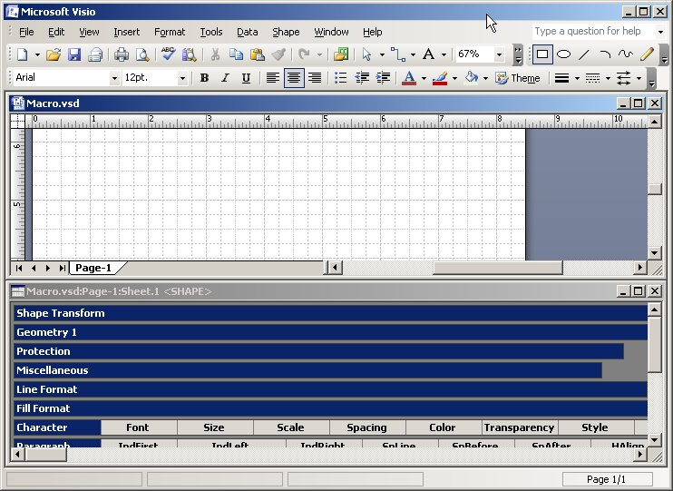
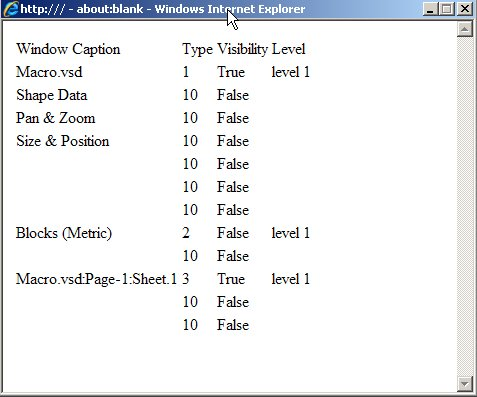

Вот сделал утилитку для вывода отчета в виде таблицы из скрипта. Всегда этого не хватало.
Известно, что для автоматизации Visio можно использовать не только VBA и различные виды Add-On и Add-In, но и скрипты на js, vbs, python и т.д. Скрипты хороши тем, что им не нужны никакие инсталляторы, они не мешают безопасности Visio и не требует наличия в системе каких-либо дополнительных компонентов. Вот только с представлением данных небольшая проблема. Строку с результатом вывести легко. А если нужна табличка, то приходится выводить в файл, который потом нужно открывать в другом приложении.
Решил побороть эту проблему с помощью Internet Explorer. Раз уж он есть в любой Windows системе, пусть поработает. В результате получилась процедура, которая выводит произвольный массив в виде таблички.
Для удобства формирования в качестве входного формата взят массив массивов. То есть одномерный массив (строки), каждый элемент которого является одномерным массивом (столбцы). Двумерный массив был бы более естественным, но его тяжелее динамически расширять. Количество строк и столбцов не ограничено.
Текст процедуры:
Private Sub ReportToIE(ByVal ar)
Dim ie
If TypeName(ar) = "String" Then 'error message
s = ar
ElseIf IsArray(ar) Then 'Array of arrays
r0 = LBound(ar)
r1 = UBound(ar)
c0 = LBound(ar(0))
c1 = UBound(ar(0))
s = "<table>"
For i = r0 To r1
s = s & "<tr>"
For j = c0 To c1
s = s & "<td>" & ar(i)(j) & "</td>"
Next
s = s & "</tr>"
Next
s = s & "</table>"
Else
s = "Unknown error"
End If
Set ie = CreateObject("InternetExplorer.Application")
ie.Silent = True
ie.AddressBar = False
ie.Fullscreen = False
ie.MenuBar = False
ie.Resizable = False
ie.StatusBar = False
ie.Toolbar = False
ie.Height = 300
ie.Width = 480
ie.Navigate "about:blank"
ie.Document.Write s
ie.Visible = True
' ie.Quit
' Set ie = Nothing
End Sub
Для использования нужно сформировать массив указанного формата и обратиться к процедуре. Она откроет окошко в IE и выведет в нем данные из массива в виде таблички.
Пример использования
Например, нам захотелось увидеть список открытых в данный момент окон Visio. Мы знаем, что на верхнем уровне всегда имеется как минимум одно окно с рисунком. У него несколько подчиненных окон - трафареты, ShapeData и т.д. Кроме того, могут быть еще окна на верхнем уровне, например свободные трафареты (в том числе и скрытые).
Пусть вот такая процедура соберет нам нужные данные в массив:
Sub ListWindowsToIE()
Dim c()
s = "Window Caption;Type;Visibility;Level"
b = Split(s, ";")
ReDim a(0)
a(0) = b
For i = 1 To vApp.Windows.Count
Set w1 = vApp.Windows(i)
s = w1.Caption & ";" & w1.Type & ";" & w1.Visible & "; level 1"
AddRow s 'to a
If w1.Windows.Count > 0 Then
For j = 1 To w1.Windows.Count
Set w2 = w1.Windows(j)
s = w2.Caption & ";" & w2.Type & ";" & w2.Visible & ";"
AddRow s
Next
End If
Next
ReportToIE a
End Sub
Private Sub AddRow(ByVal newrow)
n = UBound(a) + 1
ReDim Preserve a(n)
a(n) = Split(newrow, ";")
End Sub
Ну и наконец, нужен головной скрипт, который будет обращаться к этим процедурам.
Dim a()
Dim vApp
On Error Resume Next
Err.Clear
Set vApp = GetObject(,"Visio.Application")
If Err.Number > 0 Then
MsgBox "Visio is not opened"
WScript.Quit
End If
On Error Goto 0
ListWindowsToIE
Задача головного скрипта - найти открытое приложение Visio. С остальным справится ListWindowsToIE.
Собираем все это в файлик с расширением .VBS и проверяем, как оно работает. Открываем Visio, открываем в нем трафарет в скрытом окне. Открываем ShapeSheet.

Наконец, щелкаем по иконке скрипта и видим отчет

В главном окне - шесть подчиненных, причем все скрытые.
Еще на первом уровне - скрытое окно с трафаретом Blocks, у которого в свою очередь одно подчиненное. (Это Drawing Explorer для трафарета).
Также на первом уровне выводится ShapeSheet (видимый) с двумя скрытыми подчиненными окнами.
Еще раз напоминаю преимущества такого способа:
- отсутствие необходимости инсталляторов;
- работа со всеми версиями Windows и Visio (в пределах локальной машины);
- ничего не добавляется в файл Visio;
- отсутствие требований к установленным компонентам и исполняющим системам;
- отсутствие промежуточных файлов (как это было бы при выводе в CSV-Excel).